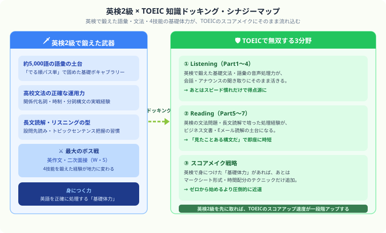

TOEIC vs 英検 どっちを取るべき？就職・転職・留学への効果を徹底比較【2026年版】
こんにちは、大谷です！「就活や自分磨きのために英語の資格を取ろう！」と決意して調べ始めたはいいものの、「TOEICと英検、結局どっちを取ればいいの……？」と、両方の対策本を並べて固まった経験、ありませんか？僕自身、公認会計士を目指す中で英語力の証明が必要になり、まったく同じ壁にぶつかりました。
でも実際に自分で両方の特性を調べて動いてみると、答えは「どちらか一方を選ぶ」ではなく「目的によって使い分け、順番を工夫すれば最強のセットになる」でした。今回は、自分自身の経験も交えながら、TOEICと英検の本当の違いと、後悔しない選び方を優しくナビゲートします！
また、記事の末尾のほうにある【いいねボタン】をポチッと押してもらえると、僕の毎日の勉強と執筆のモチベーションになるので、めちゃくちゃ嬉しいです！それでは、一緒に見ていきましょう！
「英語の資格を取りたいけどTOEICと英検どちらが良い？」—— 日本の英語資格市場を二分するTOEICと英検。目的・シーンによって最適な選択肢が全く異なります。就職・転職・留学・昇格など目的別に徹底比較します。
基本情報の比較
TOEICと英検はどちらも日本で広く使われる英語資格ですが、測定する技能・試験形式・用途が大きく異なります。僕自身、最初はこの違いを知らずに「とりあえず有名な方から」と選びかけて後悔しかけました。自分の目的に合った資格を選ぶことが、最短合格への近道です。
| 項目 | TOEIC L&R | 英検（実用英語技能検定） |
|---|---|---|
| 試験形式 | マーク式・2時間（L/R各100問） | 一次：筆記＋リスニング、二次：面接 |
| 評価方法 | スコア制（10〜990点） | 合否制（級別） |
| 試験回数 | 毎月実施（年12回程度、午前午後2回実施の月あり） | 年3回（1月・6月・10月、従来型） |
| 受験料 | 7,810円（一般） | 6,800円（3級）〜12,400円（1級） |
| スキル評価 | リスニング＋リーディング | リスニング・リーディング・ライティング・スピーキング（4技能） |
| 主催 | ETS（開発）・IIBC（国内実施運営） | 日本英語検定協会 |
就職・転職への効果
TOEICの強み
- 日本の大企業・外資系企業の採用・昇格基準としてTOEICスコアを採用している企業が多い
- 「TOEIC 730点以上」「800点以上」が採用・昇格の基準として広く普及
- 商社・メーカー・金融・コンサルなどのグローバル企業では必須
- 年間受験者数が約200万人と圧倒的な知名度
英検の強み
- 合否があるため「英検2級合格」と明確に提示できる
- ライティング・スピーキングを含む4技能を証明できる
- 大学受験での英検利用（出願資格・得点換算）が拡大中
- 教育・医療・公務員分野での活用が多い
目的別おすすめ
| 目的 | おすすめ | 理由 |
|---|---|---|
| 就職活動（大企業・外資系） | TOEIC 730〜800点 | 採用基準として広く採用されている |
| 昇格・海外駐在のアピール | TOEIC 800点以上 | グローバル人材の証明として評価 |
| 大学受験・推薦入試 | 英検2級・準1級 | 多くの大学でTOEIC換算・加点がある |
| 英語教員免許・教育分野 | 英検準1級以上 | 教員採用試験での評価が高い |
| 海外大学院・留学 | TOEFL・IELTS | TOEICも英検も海外では通用しない |
| 英語力の証明（就活・転職両用） | TOEIC 730+英検2級 | 両方持つと就活・転職の幅が広がる |
難易度・スコア対応表
| 英検の級 | TOEICスコアの目安 | 英語レベルの目安 |
|---|---|---|
| 英検3級 | 〜400点 | 中学卒業レベル |
| 英検2級 | 550〜700点 | 高校卒業レベル |
| 英検準1級 | 750〜900点 | 大学中級レベル・日常会話可能 |
| 英検1級 | 900〜990点 | 上級レベル・専門的な議論も可能 |
勉強時間・費用の比較
| 目標 | 勉強時間の目安 | 受験費用 |
|---|---|---|
| TOEIC 600点（現状400点） | 200〜300時間 | 7,810円/回 |
| TOEIC 730点（現状500点） | 300〜400時間 | 7,810円/回 |
| TOEIC 800点（現状600点） | 200〜300時間 | 7,810円/回 |
| 英検2級（現状準2級合格） | 100〜200時間 | 9,900円（一次＋二次） |
| 英検準1級（現状2級合格） | 200〜400時間 | 11,800円（一次＋二次） |
TOEICと英検は敵じゃない、最強の合わせ技
「どっちを取るか」で悩みがちですが、実は両方の特性を知ると「どの順番で取るか」という発想に変わります。僕自身、英検で固めた基礎知識がTOEICの学習をどれだけ楽にしてくれるかを実感した一人です。

どっちを選んでも、その一歩が未来を切り開く武器になる
TOEICも英検も、地味な積み重ねが必要な資格です。でもその積み重ねは、就活・転職・留学というあなたの次の一歩を必ず後押ししてくれます。同じように英語力と向き合っている仲間として、心から応援しています。僕の毎日の勉強と執筆のモチベーション維持のために、この下にある【いいねボタン】をポチッと押してもらえると、めちゃくちゃ嬉しいです！一緒に、なりたい自分に近づいていきましょう。